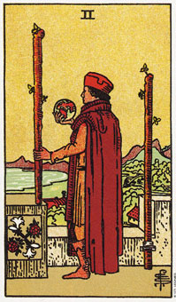

权杖二意味着一个决定。
在权杖二上，一支权杖是拴在墙上，而另外一只是自由的。这表示你有两个选择，一部分的你满意静止状态，而另一部分的你有移动、改变或旅行的欲望。而权杖二里的人是烦闷的，被他的成就(矮墙)所围绕。他手中的地球仪表示他正在做一决定。他的世界(指他的成就或环境)对他而言，似乎不再具有意义了，因为他已经长大而不适宜于此了。土地表示稳定力，水表示宁静。他越过水，眺望远山及其代表的挑战，天空乌云密布，但他并没有注意到，因为他将焦点置于内心世界。
权杖二暗示因成长而不满当前环境，需要决定未来行动方向的时机。他表示你目前所拥有的事实是不够的，你将决定下一步要怎么做。
大体上的意义
权杖二代表决定，通常是身体上的决定。例如，搬家、转换工作，或在生活中作一些具体的改变。如果问到有关你的生涯，这张牌则暗示你正决定是否换工作或换行业。
权杖二并不代表换工作或搬家的行动，而是决定本身。行动是由权杖一所代表。在决定行动之前，权杖二代表对选择的评估，它是你所习惯的东西与你所想拥有的东西之间的一个抉择。
两性关系上的意义
在两性关系的解读上，权杖二可能暗示决定一项两性人际关系或决定是否要对一项两性关系作更深的承诺。举例来说，珍娜正决定要不要搬去和她的性伴侣罗伯住在一起。她想要去，但不确定如何应付罗伯七岁的女儿。珍娜想要发展进一步关系，但是不得不怀疑，和罗伯住在一起可能引发更多的问题而不是解决问题。
权杖二指出她的选择。她住在舒适的公寓，享有快意的生活，但是这一切对她来说有点习以为常，不像和罗伯住一起带来种种的机会。然而，罗伯在家里是十分邋遢的，珍娜可能很快的就会对此恼火。这张牌指示珍娜必须同时考虑和罗伯住在一的正、负面情形，当她作决定是必须仔细衡量两种选择的相对利害。
倒立的权杖二
倒立的权杖二上的任务是烦闷的、不满足的，但又害怕转往另一个挑战。他试图说服自己已没有其他的选择了，也许他应该留在安全又熟悉的地方。然而，他终究需要离开安全的避风港到外面去冒险，如此才可以看到在那端的世界中，生命为他保留什么东西。
当权杖二倒立时，暗示你因该放弃对选择的评估，直接跳进新的经验。当你离开安全的环境而进入未知或新的情景，你会释放巨大的能量，这能量可能会以恐惧、希望、期待、忧虑等种种形式出现。无论它以哪一形式出现，你知道你仍然活着。
倒立的权杖二表示在一个长时间不满意的情景下，突然作改变。也许你花太多的时间为你停留在此一环境找合理解释，告诉自己说：“这里也没有真的那么糟!别人可能会喜欢这种的处境。换个环境，我可能会更糟。看看瞧，他一定乐于和我交换位置，而我却在这里抱怨、不满足。”
当我们不愿意为自己的行动负起责任时，生活经常迫使我们改变。是真的有人会喜欢处在你的位置，但是如果你的能力已经超越它，也许你应该放弃它而前进。如果你自己不如此做，生命终究会为你而做或促使你做。